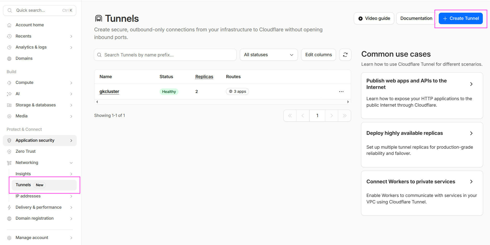
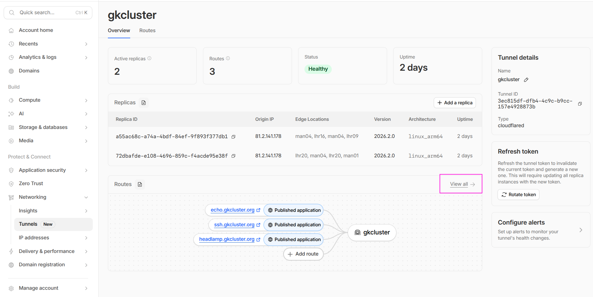
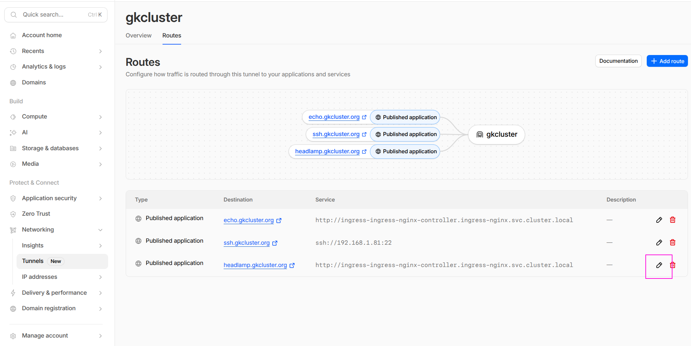
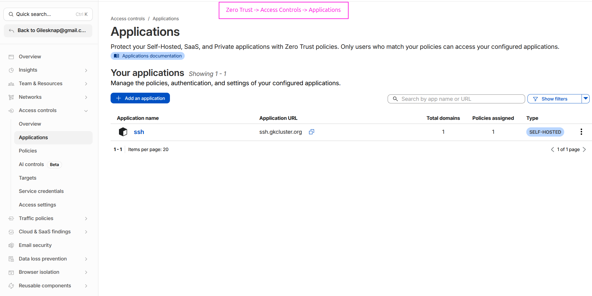
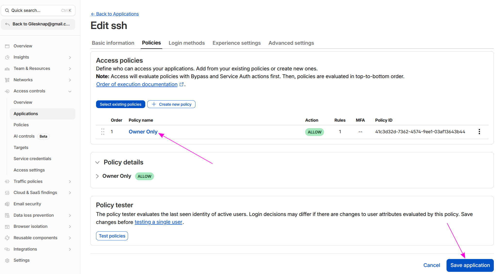
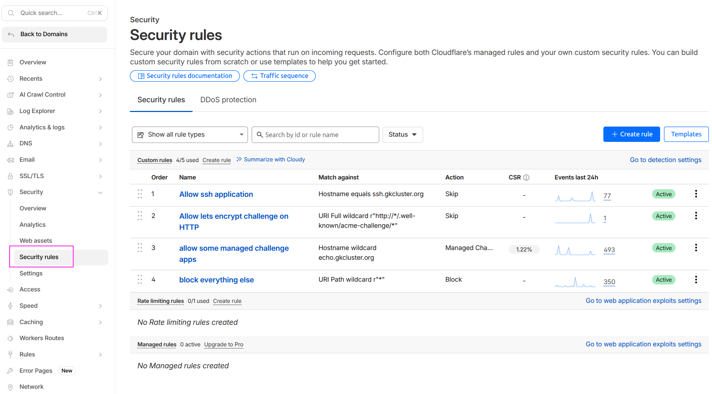

Set Up a Cloudflare SSH Tunnel for Remote Cluster Access#
This guide walks through setting up secure remote access to your K3s cluster via an SSH tunnel through Cloudflare Zero Trust, without opening any inbound firewall ports.
Architecture#
CLIENT MACHINE
│
cloudflared access ssh --hostname ssh.example.com
│ HTTPS to Cloudflare Edge (authenticated via Zero Trust policy)
▼
Cloudflare Zero Trust (identity verification + audit logging)
│ Existing outbound tunnel
▼
cloudflared pod (in cluster)
│ Forwards to node01:22
▼
node01 (<node01-ip>) SSH
│
kubectl / port-forward to any cluster service
Key security properties:
No inbound firewall ports are opened —
cloudflaredmakes outbound connections only.Cloudflare Access enforces identity verification (e.g. email OTP, GitHub, Google) before any SSH session is established.
All access attempts are logged in the Cloudflare Access audit trail.
Optionally, short-lived SSH certificates replace static keys entirely.
Two Cloudflare dashboards#
This guide uses two separate Cloudflare dashboards — it is easy to get confused between them:
one.dash.cloudflare.com — the Zero Trust dashboard for managing tunnels, Access Applications, and security policies.
dash.cloudflare.com — the main dashboard for managing DNS zones, WAF rules, and general site settings.
The steps below will tell you which dashboard to use at each point.
Prerequisites#
A working Cloudflare Tunnel with
cloudflareddeployed in the cluster (see Set Up DNS, TLS & Cloudflare Tunnel).SSH enabled on
node01(it is by default after Ansible provisioning).cloudflaredinstalled on your client machine:
# macOS
brew install cloudflare/cloudflare/cloudflared
# Linux (Debian/Ubuntu) — install latest release directly
curl -L --output /tmp/cloudflared.deb \
https://github.com/cloudflare/cloudflared/releases/latest/download/cloudflared-linux-amd64.deb
sudo dpkg -i /tmp/cloudflared.deb
Part 1: Add an SSH route to the tunnel#
First, add an SSH public hostname to your existing Cloudflare tunnel so that
traffic to ssh.example.com is forwarded to your control-plane node’s SSH port.
In the Zero Trust dashboard (one.dash.cloudflare.com):
Navigate to Networking → Tunnels. You should see your existing tunnel listed as Healthy.

The Tunnels page showing the existing gkcluster tunnel with Healthy status.#
Click on your tunnel name to open the tunnel details.

The tunnel overview shows active replicas, uptime, and published routes. Click View all under Routes to see the full list, or click Add a route to add the SSH hostname.#
Click Add a route (or go to the Routes tab and click Add route). Configure the new public hostname:
Field |
Value |
|---|---|
Subdomain |
|
Domain |
|
Service Type |
|
Service URL |
|
Note
The Service field is split into a Type dropdown and a URL field. Select SSH
from the Type dropdown and enter <node01-ip>:22 in the URL field — do not include
the ssh:// prefix in the URL field.
After saving, the Routes tab shows all published applications including the new SSH route alongside any existing services (echo, headlamp, etc.):

The Routes tab showing all published applications. The SSH route forwards to
ssh://192.168.1.81:22 on the cluster network. HTTP services route to the
ingress-nginx controller.#
Cloudflare automatically creates a proxied CNAME:
ssh.example.com → <tunnel-id>.cfargotunnel.com (Proxied ☁)
Note
The cloudflared pod resolves <node01-ip> from within the cluster network — it does
not need a DNS name, just a reachable IP. Using the control-plane IP directly is more
reliable than a hostname here.
Part 2: Create a Zero Trust Access Application#
This is the critical security gate. Without an Access Application, anyone with your DNS name could attempt connections through the tunnel. The Access Application enforces identity verification before any SSH session is established.
Still in the Zero Trust dashboard (one.dash.cloudflare.com):
Navigate to Access controls → Applications.
Click Add an application and select Self-hosted.
Configure the application:
Field |
Value |
|---|---|
Application name |
|
Session duration |
|
Domain |
|
Subdomain |
|
Path |
none (leave blank) |
On the Policies tab, create an access policy:
Field |
Value |
|---|---|
Policy name |
|
Action |
|
Include rule |
Emails → |
Warning
Keep this policy as restrictive as possible — ideally a single email address or a specific identity provider group. This policy is the primary security boundary.
Click Save application.
After saving, the Applications list shows your SSH application:

The Access Applications page showing the ssh application at ssh.gkcluster.org
with one policy assigned.#
You can review or edit the policy at any time by clicking the application name and selecting the Policies tab:

The policy editor showing the “Owner Only” ALLOW policy. Use the policy tester to verify your email is permitted before attempting to connect.#
Part 3: Add a WAF skip rule#
By default Cloudflare’s WAF inspects all proxied traffic and may block requests to
ssh.example.com before they ever reach the Access Application — resulting in a
generic “Why have I been blocked?” page and failed to find Access application from
cloudflared. You must add a WAF skip rule to let Access handle authentication
for the SSH hostname.
Switch to the main Cloudflare dashboard (dash.cloudflare.com):
Select your
example.comzone.Go to Security → Security rules (formerly WAF → Custom rules).
Click Create rule.
Configure:
Field |
Value |
|---|---|
Rule name |
|
Expression |
|
Action |
|
Under Skip, tick:
Skip all remaining custom rules
Skip all managed rules (WAF Managed Ruleset)
Click Deploy.

The Security rules page showing the SSH skip rule alongside other WAF rules. The SSH rule must use Skip so that Cloudflare Access can handle authentication instead of the WAF blocking the request.#
Warning
Without this rule, cloudflared access login returns
failed to find Access application and visiting ssh.example.com in a browser
shows a WAF block page rather than the Cloudflare Access login prompt. The WAF
intercepts the request before Access can issue its authentication challenge.
Part 4: Client SSH configuration#
4.1 Add a ProxyCommand entry to ~/.ssh/config#
Host ssh.example.com
ProxyCommand cloudflared access ssh --hostname %h
User ubuntu
StrictHostKeyChecking no
4.2 Authenticate before first connection#
The ProxyCommand does not open a browser automatically. You must log in first
to cache a token:
cloudflared access login https://ssh.example.com
This opens a browser window for Cloudflare Access authentication. After authenticating,
a token is written to ~/.cloudflared/. The token is reused for the session duration
you configured (24 hours by default).
Warning
Parts 1 (tunnel route), 2 (Access Application), and 3 (WAF skip rule) must all be completed before this command will work. If any is missing you will see:
failed to find Access application— either the Access Application (Part 2) does not exist, the hostname does not exactly matchssh.example.com, or the WAF (Part 3) is blocking the request before Access can respond. Check Access controls → Applications at one.dash.cloudflare.com and Security → Security rules at dash.cloudflare.com.websocket: bad handshake— the tunnel hostname in Part 1 is missing, so Cloudflare has nowhere to forward the connection. Check Networking → Tunnels → Public hostnames.
4.3 Connect via SSH#
ssh ssh.example.com
Subsequent connections within the token’s session duration connect immediately without
re-authentication. When the token expires, re-run cloudflared access login first.
Part 5: Remote kubectl access#
Once the SSH tunnel is working, you can use it to reach the Kubernetes API remotely.
5.1 Copy and patch your kubeconfig#
# Copy kubeconfig from the control plane
scp ssh.example.com:~/.kube/config ~/.kube/k3s-remote.yaml
# Patch the server address to use a local forwarded port
sed -i 's|https://<node01-ip>:6443|https://127.0.0.1:6443|' \
~/.kube/k3s-remote.yaml
5.2 Forward the Kubernetes API port and use kubectl#
# Start the port forward in the background
ssh -fNL 6443:<node01-ip>:6443 ssh.example.com
# Use the remote kubeconfig
export KUBECONFIG=~/.kube/k3s-remote.yaml
kubectl get nodes
Expected output: your cluster nodes in Ready state.
Part 6: Access cluster web services remotely#
Use SSH local port-forwarding to reach any cluster web service. The forwarding target
is resolved from node01 — so you can use internal cluster DNS or LAN IPs.
# Single service — ArgoCD UI
ssh -fNL 8080:<worker-ip>:443 ssh.example.com
# Open: https://localhost:8080
# Multiple services in one connection
ssh -fNL 8080:<worker-ip>:443 \
-NL 8081:<worker-ip>:443 \
ssh.example.com
Or use kubectl port-forward once your tunnel API connection is active:
# Forward ArgoCD (already connected via Part 5)
kubectl port-forward svc/argocd-server -n argo-cd 8080:443 &
# Forward Grafana
kubectl port-forward svc/grafana -n monitoring 8081:80 &
Service |
Forwarded URL |
|---|---|
ArgoCD |
|
Grafana |
|
Headlamp |
adjust port as needed |
Tip
Create a shell script or alias to bring up all your port forwards in one command:
#!/usr/bin/env bash
# remote-cluster.sh — bring up tunnel port forwards
ssh -fNL 6443:<node01-ip>:6443 ssh.example.com
echo "Kubernetes API → https://127.0.0.1:6443"
kubectl --kubeconfig ~/.kube/k3s-remote.yaml port-forward \
svc/argocd-server -n argo-cd 8080:443 &
echo "ArgoCD → https://localhost:8080"
Part 7: Verification#
Confirm Access policy is enforced#
Visit https://ssh.example.com in a browser — you should be redirected to the
Cloudflare Access login page, not an SSH banner. If you see a plain error page,
check Access controls → Applications at one.dash.cloudflare.com
to confirm the application exists and its hostname matches.
Test the SSH tunnel#
ssh ssh.example.com echo "tunnel ok"
Expected: tunnel ok printed after authentication.
Check cloudflared logs in the cluster#
kubectl logs -n cloudflared deployment/cloudflared | tail -20
Look for connections referencing ssh.example.com.
Confirm the node is NOT directly reachable from outside your LAN#
From a mobile hotspot (off your home network):
ssh ubuntu@<node01-ip>
# Expected: connection refused or timeout — direct access is blocked
The node is only reachable via the Cloudflare tunnel with a valid Access session.
See also#
Set Up DNS, TLS & Cloudflare Tunnel — Setting up the base Cloudflare tunnel
Set Up OAuth Authentication — In-cluster OAuth authentication as an alternative to Cloudflare Access